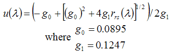
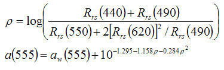
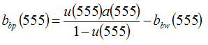
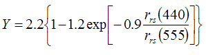
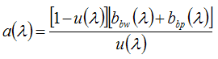
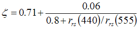
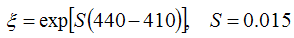
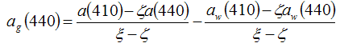
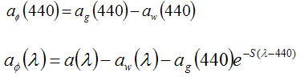

The Quasi-Analytical Algorithm (QAA) was developed to derive the absorption and backscattering coefficients by inverting the spectral remote-sensing reflectance (Rrs(λ)).
The Quasi-Analytical Algorithm is a 10 step process.
| MERIS spectral ranges | |||||
|---|---|---|---|---|---|
| Band 1 | Band 2 | Band 3 | Band 4 | Band 5 | Band 6 |
| 412nm | 443nm | 490nm | 510nm | 560nm | 620nm |
| IOPs | |||||||
|---|---|---|---|---|---|---|---|
| 410 | 440 | 450 | 490 | 510 | 560 | 620 | |
| aw | 0.00473 | 0.00635 | 0.00922 | 0.015 | 0.0325 | 0.0619 | 0.2755 |
| bbw | 0.0033978 | 0.0024484 | 0.0022486 | 0.001549 | 0.0012992 | 0.0008994 | 0.0005996 |









